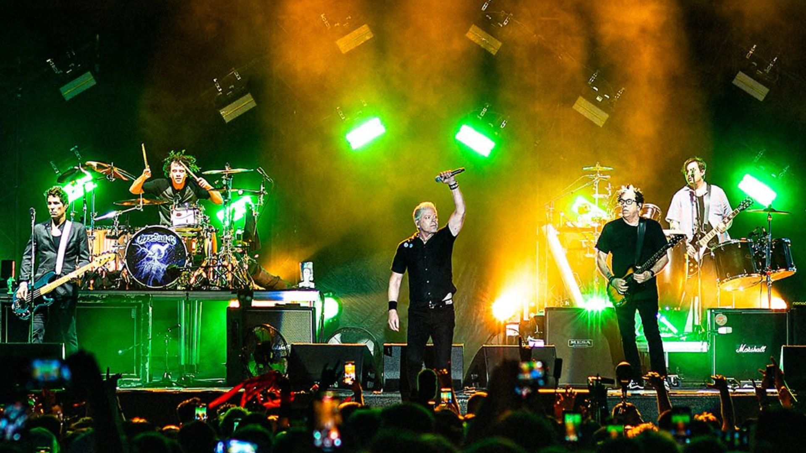

The Offspring é uma banda de punk rock originária de Garden Grove,
Califórnia, formada em 1984. A banda foi fundada por
Dexter Holland (vocal e guitarra) e Greg K (guitarra). A formação
mais estável ao longo dos anos tem sido com
Noodles (guitarra),
Greg K (baixo) e Pete Parada (bateria). Nos primeiros anos, a banda se
dedicou ao punk rock tradicional e ao estilo de
hardcore melódico,
buscando criar um som rápido, energético e com letras sobre juventude,
rebeldia e críticas sociais. O primeiro álbum,
"The Offspring" (1989), foi lançado de forma independente e gerou
interesse no cenário underground. O segundo álbum,
"Ignition" (1992), chamou mais atenção e consolidou a banda na cena
punk californiana.
O grande sucesso: "Smash" (1994)
O grande salto da banda para o mainstream veio com o lançamento de
"Smash" (1994), um marco do punk dos anos 90. Com o single
"Self Esteem", o álbum se tornou um dos discos independentes mais
vendidos da história, colocando o
The Offspring entre as maiores
bandas do gênero. Eles são amplamente reconhecidos como uma das bandas que
ajudaram a levar o punk rock de volta ao mainstream nos anos 90, ao lado
de nomes como
Green Day e Rancid.
"Vender mais 10 milhões de álbuns não é a prioridade, lançar algo que
nos orgulhamos é."
Curiosidades da banda
-
A banda foi formada em 1984, quando os membros ainda estavam no
ensino médio
-
O vocalista Dexter Holland é formado em biologia molecular e tem PhD
- O nome original da banda era Manic Subsidal
-
O álbum "Smash" (1994) se tornou o disco independente mais vendido
da história
-
O guitarrista Noodles entrou na banda porque era maior de idade e
podia comprar cerveja pros outros membros
-
O clipe da música "Pretty Fly (for a White Guy)" virou um fenômeno
cultural no final dos anos 90
- A banda já vendeu mais de 40 milhões de álbuns pelo mundo
-
O The Offspring foi uma das primeiras bandas punk a conquistar
sucesso global na era do pós-Nirvana
-
Dexter Holland tem sua própria marca de molho de pimenta chamada
Gringo Bandito
-
Apesar de ser uma banda de punk rock, suas músicas muitas vezes
misturam elementos de ska, hard rock e até humor irônico nas letras
"Chances thrown Nothing's free Longing for, used to be Still it's
hard, hard to see Fragile lives Shattered dreams (go!)"
